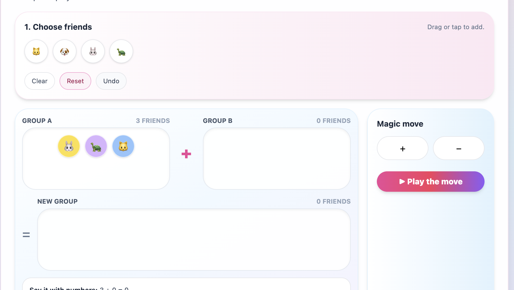
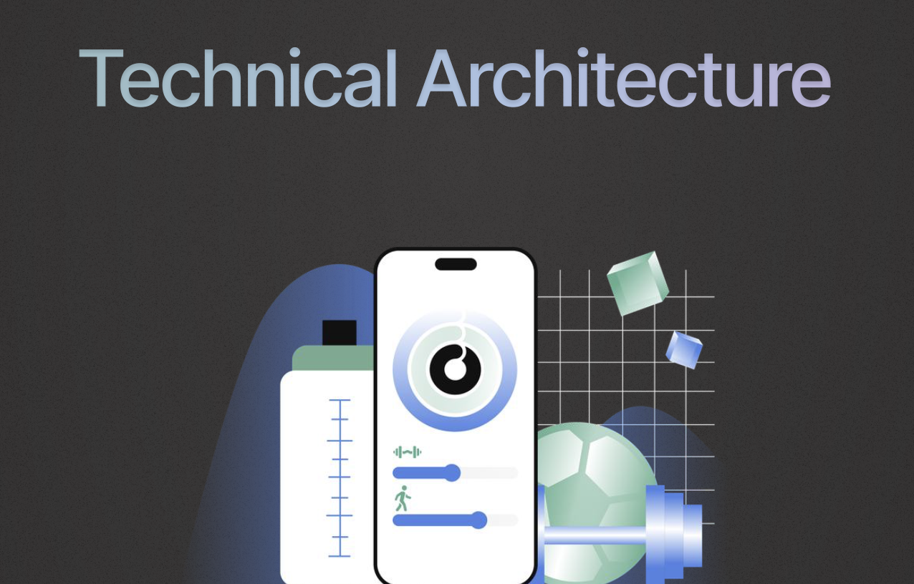
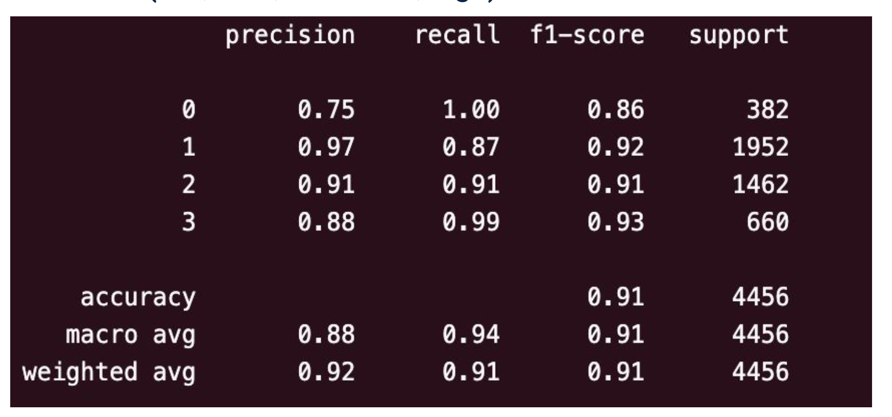
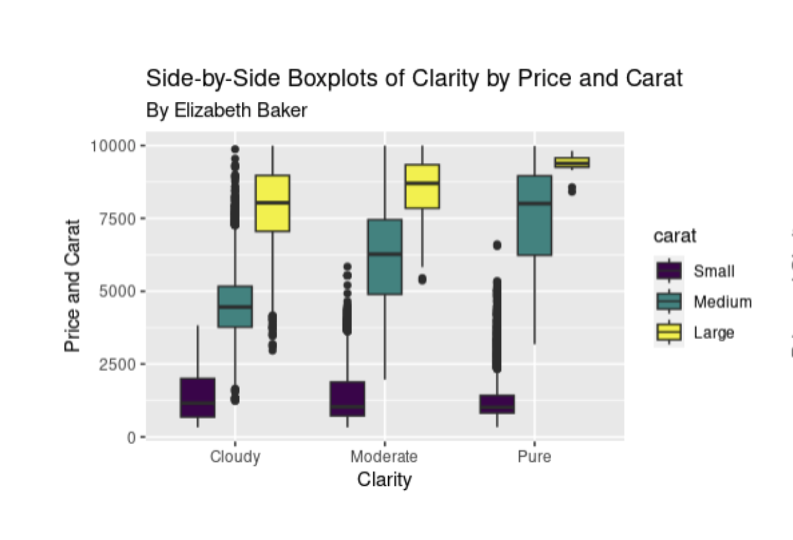

Projects

Curiosity Compass
K–1 Learning
Imagination
Critical Thinking
Interactive Tool
A playful classroom tool that sparks discussion and creativity. Students spin a digital
compass to reveal “What if…?” prompts or riddles, then imagine, talk, and explore ideas aloud.
Designed as a warm-up for K–1 classrooms to build curiosity, flexible thinking, and partner talk routines.
Try Compass

Math Playground
Interactive Math
K–2 Learning
Math Visualization
Playful UI/UX
A playful K–2 math lab where kids drag friends into groups, choose an operation,
and watch addition & subtraction come alive.
Try Prototype

DripWorks' GardenBee
K–5 Education
Curriculum Design
UX / Web Design
EdTech
A sustainability-focused K–5 education initiative built with DripWorks...
Visit Website

Tomo-Fit
Behavior Design
UX Design
Social Motivation
Figma
Tomo-Fit is a social behavior-design system...
View Prototype
View Project

Healthcare Inequality Predictor
Data Science
Predictive Modeling
Public Health
Python
A statistical model exploring inequities...
View Project
View Poster
MuseScore Governance Analysis
Open Source
Governance
Collaboration Systems
A deep-dive into MuseScore’s governance model...
View Project

Which Strategy Pays?
Decision Science
Behavioral Economics
Retail Analytics
A strategy comparison project...
View Project